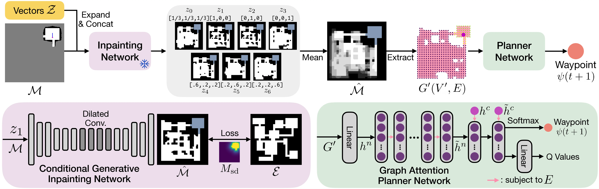
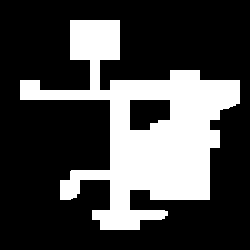
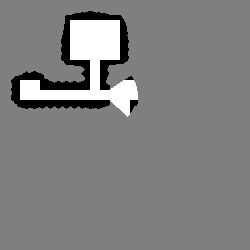
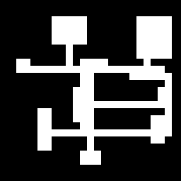
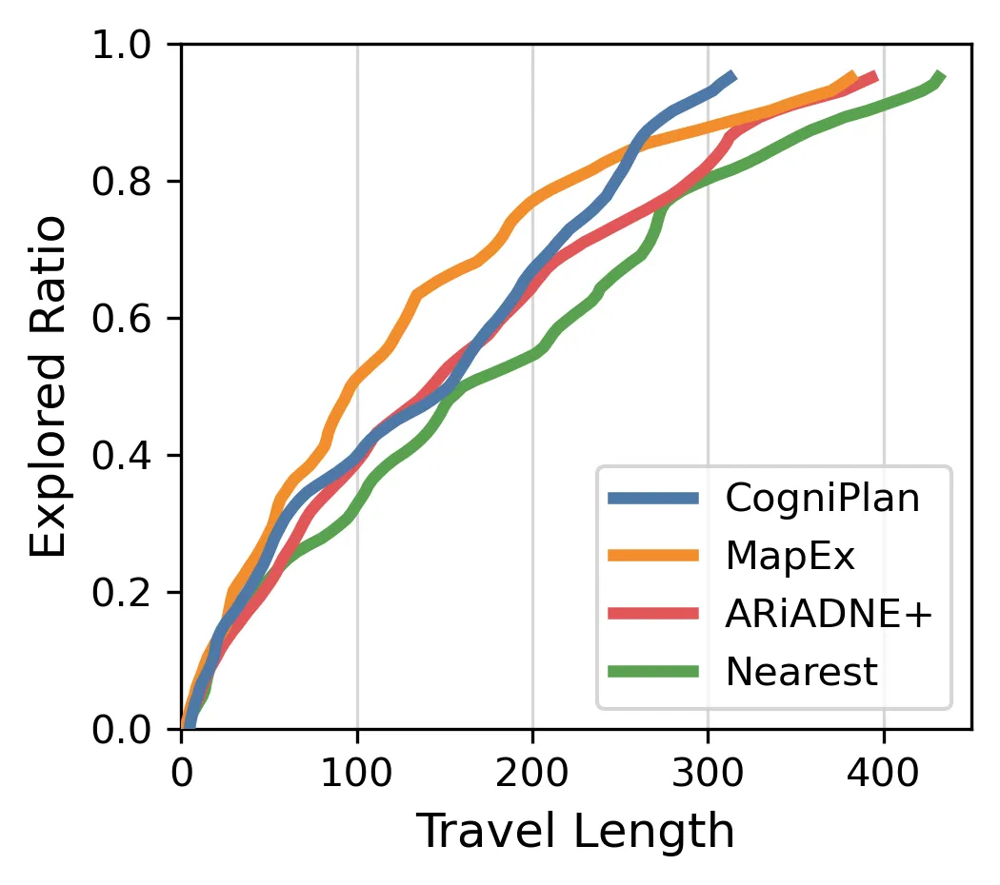
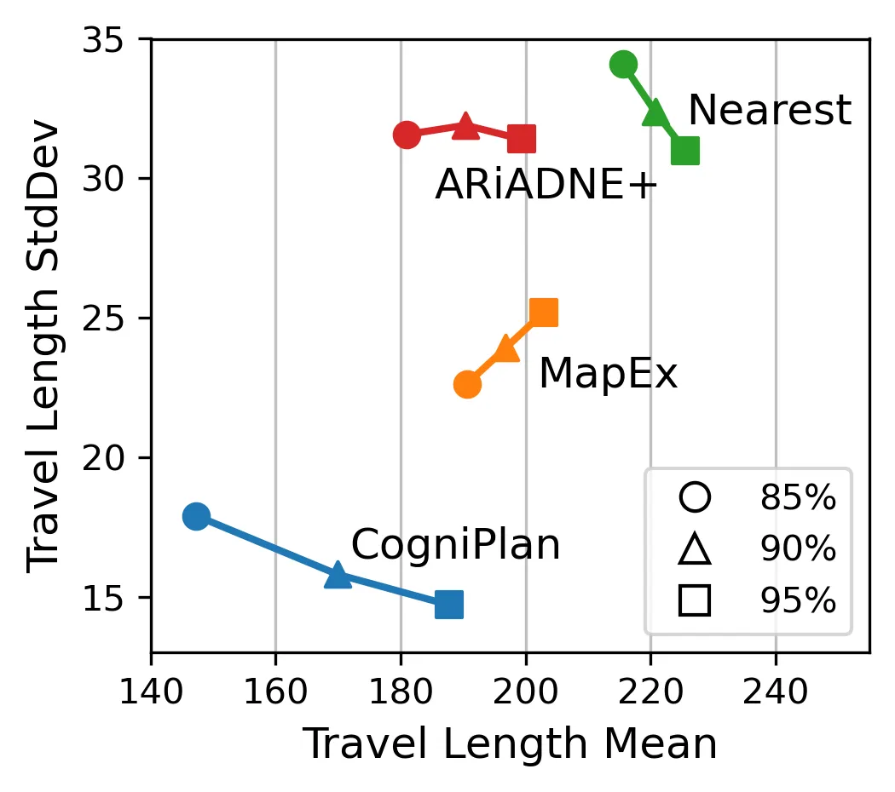

Demos in Simulated Maps
Exploration
Navigation
Path planning in unknown environments is a crucial yet inherently challenging capability for mobile robots, which primarily encompasses two coupled tasks: autonomous exploration and point-goal navigation. In both cases, the robot must perceive the environment, update its belief, and accurately estimate potential information gain on-the-fly to guide planning. In this work, we propose CogniPlan, a novel path planning framework that leverages multiple plausible layouts predicted by a conditional generative inpainting model, mirroring how humans rely on cognitive maps during navigation. These predictions, based on the partially observed map and a set of layout conditioning vectors, enable our planner to reason effectively under uncertainty. We demonstrate strong synergy between generative image-based layout prediction and graph-attention-based path planning, allowing CogniPlan to combine the scalability of graph representations with the fidelity and predictiveness of occupancy maps, yielding notable performance gains in both exploration and navigation. We extensively evaluate CogniPlan on two datasets (hundreds of maps and realistic floor plans), consistently outperforming state-of-the-art planners. We further deploy it in a high-fidelity simulator and on hardware, showcasing its high-quality path planning and real-world applicability.
We first train a generative inpainting network on procedurally-generated maps, given their ground-truth layout type vector (room, tunnel, or outdoor), and then freeze the model to train a graph-attention-based planner network. Our planner reasons over multiple predictions generated from a set of layout conditioning vectors by incorporating probabilistic information into the graph feature, and iteratively outputs the next waypoint for exploration or navigation.

Here is an interactive demo of our conditional generative inpainting model. You can drag the magenta dot around to adjust the layout conditioning vector z. Here, we confine z to a soft one-hot vector that follows a probability distribution.




Autonomous Exploration

Point-Goal Navigation

Zero-shot Generalization to KTH Floor Plan

Robustness to Random Start Positions
Exploration
Navigation

Some parts of this work are implemented based on large-scale-DRL-exploration
and Context_Aware_Navigation.
The Gazebo experiments are conducted using the CMU exploration environment.
Some excellent related works: TARE, MapEx,
ARiADNE.
@inproceedings{wang2025cogniplan,
author={Wang, Yizhuo and He, Haodong and Liang, Jingsong and Cao, Yuhong and Chakraborty, Ritabrata and Sartoretti, Guillaume},
title={CogniPlan: Uncertainty-Guided Path Planning with Conditional Generative Layout Prediction},
booktitle={Conference on Robot Learning},
year={2025},
organization={PMLR}
}